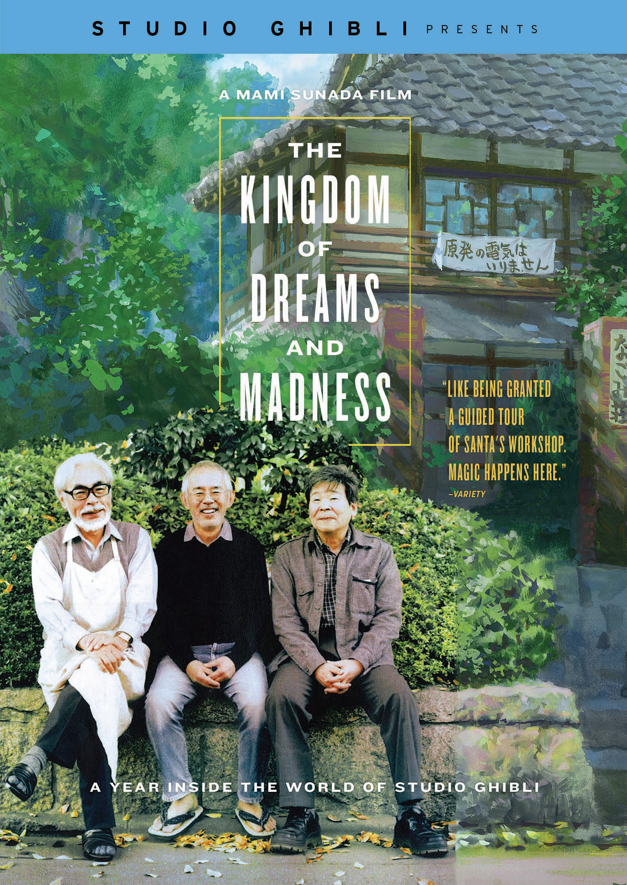

Kingdoms of Dreams and Madness: A documentary about Hayao Miyazaki
-
Lycra Studio
The making of a stop motion animation film.
Like Wallace and Gromit, many people’s first stop motion animation film, Lycra still uses stop motion animation to create their films. You get to see how 3D printing has improved the animation industry and what it looks like to picture out a movie frame by frame. -
Creativity Inc.
The creation of Pixar and the reinvigoration of Disney animation
This book talks about more than only the making of a company. It highlights the changes in the animation industry, how 3D animation engines came to be, team dynamics in animation studio, funding deadlines and risk taking. It is one of the most engaging books I have read that centers around the making of a business. -
Pixar in a Box
The Art of Storytelling
The Science of Animation